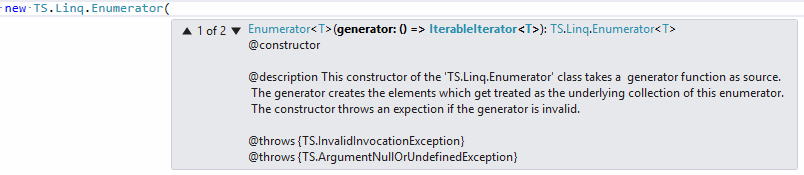
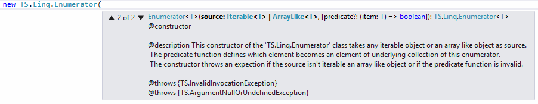
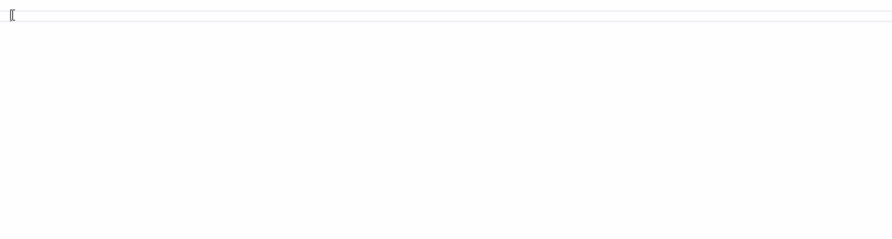
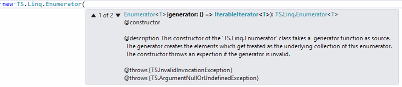
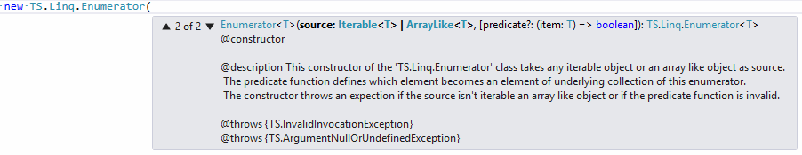
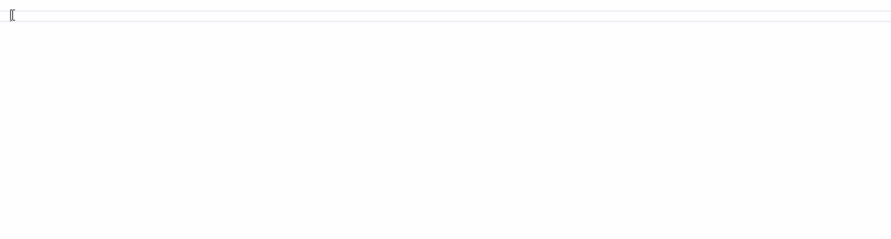

How to use the TypeScript LINQ library
If you are new to LINQ you may ask yourself how you can use the TypeScript LINQ library. LINQ is the abbreviaton for "Language integrated Query" which was introduced by Microsoft for the .NET framework around
2007 with the framework version 3.5. The intention was to create a query language wich isn't target specific, but an integral part of the programming language. This way a programmer doesn't have to learn a query language for every different structured or semistructured data source. Before LINQ you had to learn a query language for Object Relational Databases, one for Object Databases, one for XML, one for DOM and a few others.
Ironically LINQ isn't an integrated part of any programming language as the name suggests. It's simply a collection of static functions which can be attached to any class wich implements the IEnumerable<T> interface. It's not part of a language specification, it's simply a library which you can bind to your code in order to use the LINQ extensions. For some stupid reasons, Microsoft decided to release LINQ in two different syntax styles. One they call "Query Syntax" and the other they call "Method Syntax". When you read about LINQ and find some examples which look like a SQL query string in reverse, thats "Query Syntax". The other syntax is sometimes called "Lambda Syntax" or "Fluent Interface Syntax". That is the one which is implemented by the TypeScript LINQ library.
Here is the linkt to the LINQ documentation at Microsoft: LINQ (Language-Integrated Query)
Hers are some examples for LINQ queries in "Lambda Syntax": LINQ 101 Samples - Lambda Style
In order to use the TypeScript LINQ library in your own TypeScript project, you have to reference the class definitions, interfaces and function collections which build the foundation of LINQ. You can also reference the combined Javascript file and the corresponding type definition file in your project. You can read about it here: Overview.html
After that, you start using LINQ by creating a new "TS.Link.Enumerator" instance. The constructor of the "TS.Linq.Enumerator" class is overloaded. The first constructor expects a generator function as data source. That generator function creates the elements which get treated as the underlying collection of the new created Enumerator object. Below is an image of what you see when you type the opening brace of the constructor in Visual Studio.

The second constructor takes an object of type Iterable<T> or an array like object of type ArrayLike<T> as data source.

In other words, you can create a new Enumerator with every Javascript object that is some kind of collection or creates a number of elements which can be treated as collection. You could also start by creating an instance of one of the collection classes "Dictionary and List". Once you have an instance of one of this classes, you can use the LINQ extension functions because they are bound to these classes.
The use of the fluent interface is really simple. You start with one of the latter described classes and call als much of the LINQ functions as you like until you get the desired result. Below is a stupid example which uses a TS.Collections.List object to create an array of 100 randomized numbers. You could solve that problem much easier of course, but it works as an example on how to use the LINQ library in TypeScript.

If you are familiar with LINQ in C#, you could hardly tell whether that's an example for C# or TypeScript. But it is of course a TypeScript example. It just looks and feels so much like the C# counterpart, that you won't have problems to use the TypeScript LINQ library.
So that's all to say about this library. If you are curious about the deffered execution behavior or if you are new to LINQ at all you should read about it in one of the online tutorials or at MSDN. There is also a vast amount of books and other websites which cover this topic.
Since all of the extension functions are tested, you may also look at the test functions to see how a particular extension function can be used.
Ironically LINQ isn't an integrated part of any programming language as the name suggests. It's simply a collection of static functions which can be attached to any class wich implements the IEnumerable<T> interface. It's not part of a language specification, it's simply a library which you can bind to your code in order to use the LINQ extensions. For some stupid reasons, Microsoft decided to release LINQ in two different syntax styles. One they call "Query Syntax" and the other they call "Method Syntax". When you read about LINQ and find some examples which look like a SQL query string in reverse, thats "Query Syntax". The other syntax is sometimes called "Lambda Syntax" or "Fluent Interface Syntax". That is the one which is implemented by the TypeScript LINQ library.
Here is the linkt to the LINQ documentation at Microsoft: LINQ (Language-Integrated Query)
Hers are some examples for LINQ queries in "Lambda Syntax": LINQ 101 Samples - Lambda Style
In order to use the TypeScript LINQ library in your own TypeScript project, you have to reference the class definitions, interfaces and function collections which build the foundation of LINQ. You can also reference the combined Javascript file and the corresponding type definition file in your project. You can read about it here: Overview.html
After that, you start using LINQ by creating a new "TS.Link.Enumerator" instance. The constructor of the "TS.Linq.Enumerator" class is overloaded. The first constructor expects a generator function as data source. That generator function creates the elements which get treated as the underlying collection of the new created Enumerator object. Below is an image of what you see when you type the opening brace of the constructor in Visual Studio.

The second constructor takes an object of type Iterable<T> or an array like object of type ArrayLike<T> as data source.

In other words, you can create a new Enumerator with every Javascript object that is some kind of collection or creates a number of elements which can be treated as collection. You could also start by creating an instance of one of the collection classes "Dictionary and List". Once you have an instance of one of this classes, you can use the LINQ extension functions because they are bound to these classes.
The use of the fluent interface is really simple. You start with one of the latter described classes and call als much of the LINQ functions as you like until you get the desired result. Below is a stupid example which uses a TS.Collections.List object to create an array of 100 randomized numbers. You could solve that problem much easier of course, but it works as an example on how to use the LINQ library in TypeScript.

If you are familiar with LINQ in C#, you could hardly tell whether that's an example for C# or TypeScript. But it is of course a TypeScript example. It just looks and feels so much like the C# counterpart, that you won't have problems to use the TypeScript LINQ library.
So that's all to say about this library. If you are curious about the deffered execution behavior or if you are new to LINQ at all you should read about it in one of the online tutorials or at MSDN. There is also a vast amount of books and other websites which cover this topic.
Since all of the extension functions are tested, you may also look at the test functions to see how a particular extension function can be used.